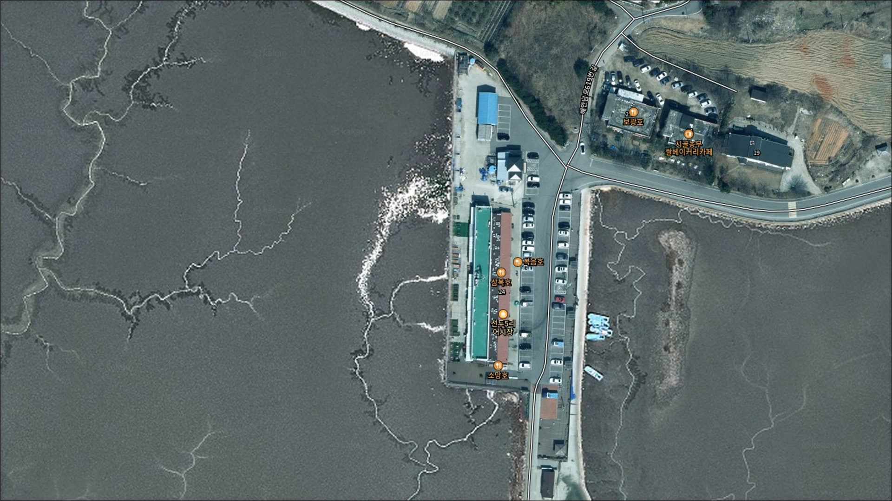
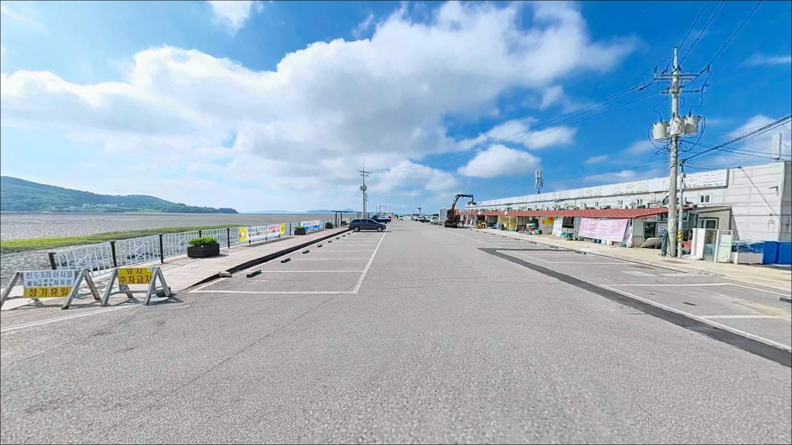
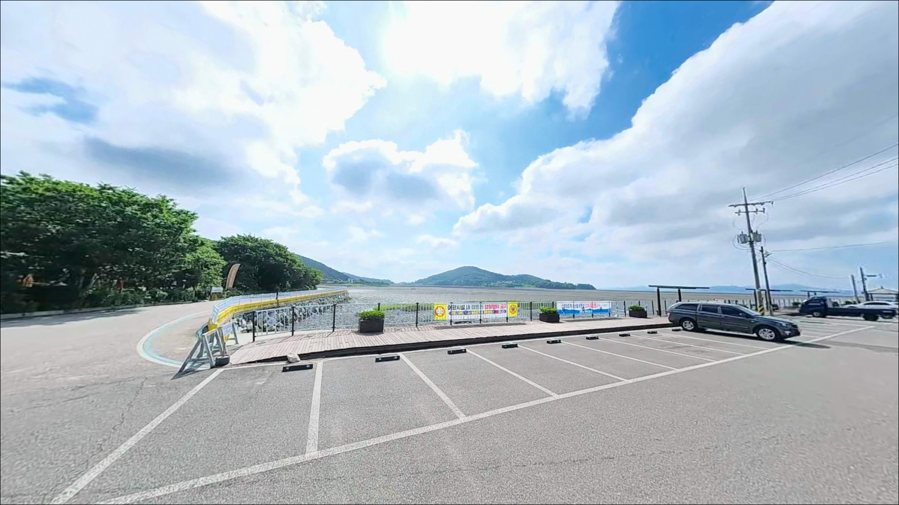
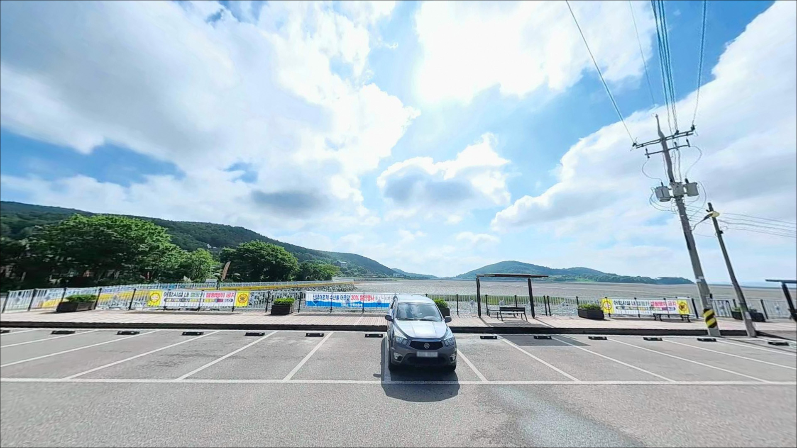
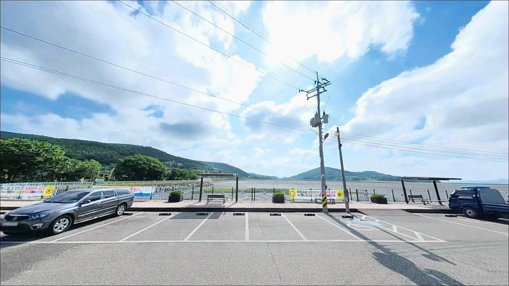
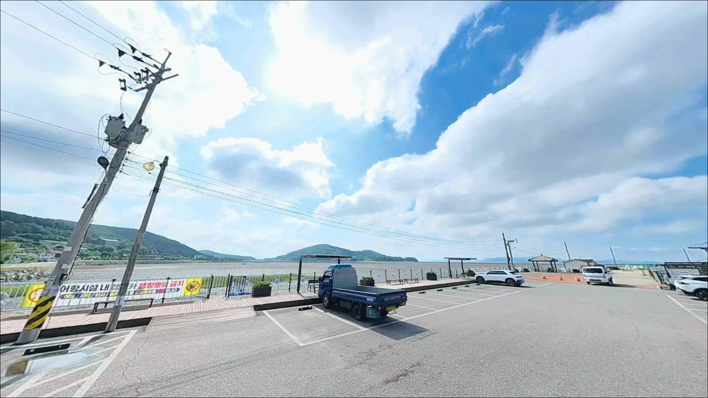
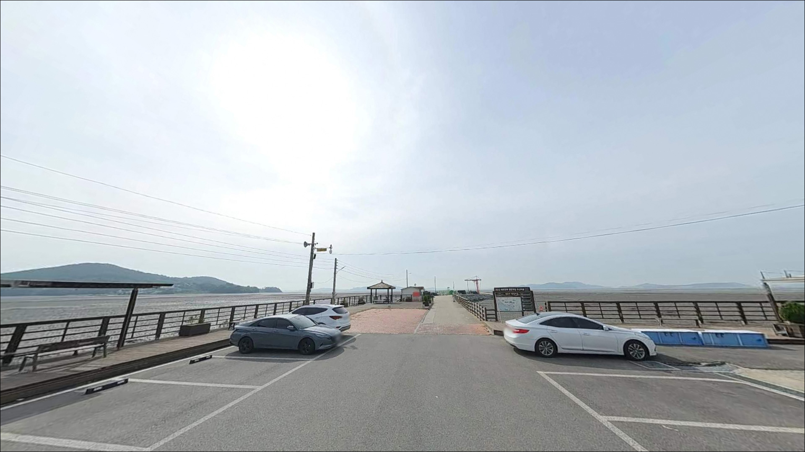
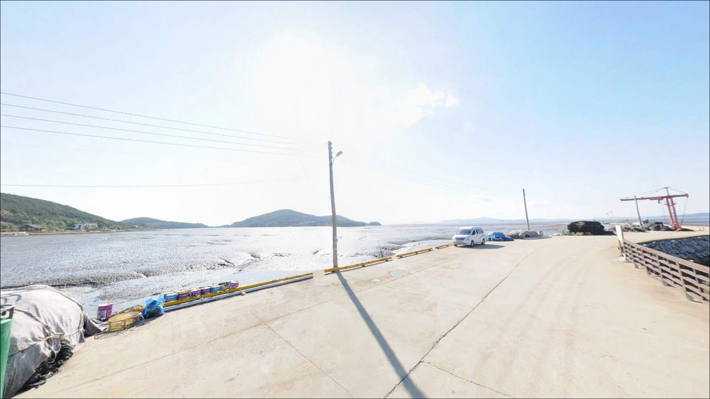
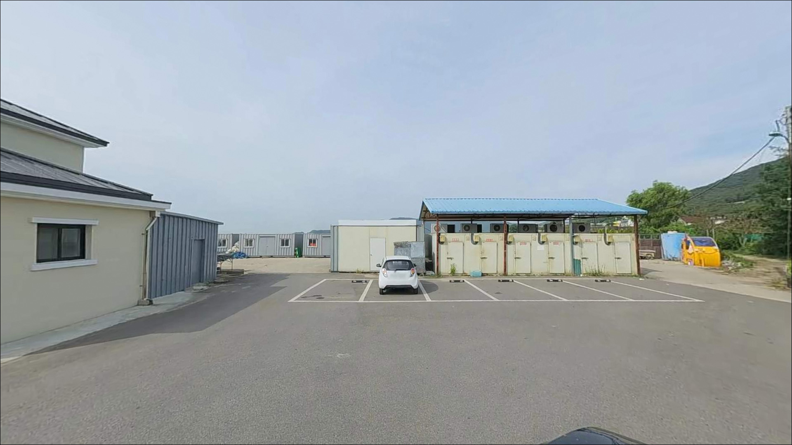

이 페이지에는 광고(제휴 링크 포함)가 있으며, 광고 링크를 통해 구매하면 운영자가 판매 수익 또는 수수료를 받을 수 있습니다. 포인트 사진: 카카오맵 스카이뷰·로드뷰. 이 페이지의 지도·사진 이미지는 카카오맵의 실제 서비스 이미지와 다를 수 있습니다.


선두5리어시장, 강화도 인천 강화군 고요한 수면을 바라보며 차박, 낚시를 즐기기 좋은 해안
포인트 안내
선두5리어시장
인천 강화군 길상면 선두리 1043-10
물때 확인 없이 선두5리어시장을 찾으면,
간조에 드러난 갯벌 앞에서
채비만 쥐고 돌아서야 하는 상황이 생깁니다.
강화도 남단 선착장은 조수간만의 차가 커서,
타이밍을 놓치면 선착장 주변 갯벌이
넓게 드러나 낚시 자체가 불가능해지는 시간대가
하루에도 두 차례 돌아옵니다.
이 글은 선두5리어시장의
물때 판단 기준, 진입 환경, 지형 조건,
낚시 스타일 적합성에 집중합니다.
조황 단정이나 특정 어종 보장은
이 글의 범위에 포함되지 않습니다.

1. 포인트 위치 및 진입 동선 분석
선두5리어시장은 강화도 남쪽 해안,
길상면 해안남로619번길을 따라 진입하는 구조입니다.
해안도로에서 마을 안쪽으로 이어지는 길이
선착장까지 연결되어 있어,
일반 승용차 기준으로는 접근이 어렵지 않은 편입니다.
다만 마을 안쪽 구간의 도로 폭이 여유롭지 않아
대형 SUV나 캠핑카는 출발 전 경로를 확인하고
가는 편이 안전합니다.
어시장과 선착장이 붙어 있는 구조라
진입로 자체는 상업시설 접근 수준을 유지합니다.
어시장 앞 공터와 선착장 인근에
무료 주차 공간이 있는 것이 확인되었습니다.
주말 성수기에는 어시장 방문객과 낚시인이 겹쳐
주차 자리가 빠르게 줄어들 수 있어,
이른 아침 입장이 유리한 편입니다.
회차 공간은 어판장 주변 공터에서 확보 가능한 편이나,
차량 크기에 따라 여유가 달라질 수 있습니다.
선착장 끝단 방향은 어선 이동 동선과
겹치는 구간이 있을 수 있으므로,
주차 후 공간 배치를 현장에서 먼저 살피는 것이 기본입니다.

2. 차박 환경 평가 및 야간 체류 여건
선두5리 일대는 소규모 어촌 마을 구조입니다.
민가와 가까운 거리에 선착장이 자리하고 있어
야간 프라이버시는 높지 않은 편입니다.
어시장 영업이 끝나는 시간 이후에는
차량 통행이 줄어드는 편이나,
완전히 조용한 분위기를 기대하기는 어려운 구조입니다.
가로등은 어시장 주변으로 일부 있을 가능성이 높으나,
선착장 끝단 방향으로 갈수록 어두워지는 편입니다.
개인 조명은 반드시 준비해야 하며,
물이 빠진 구간의 갯벌은 미끄러움이 심해
야간 이동 시 각별한 주의가 필요합니다.
낚시를 마치고 차 안에서 조용히 쉬는 형태의
짧은 체류라면 현실적으로 가능한 수준이나,
취사나 야외 장비 설치는 이 환경과 맞지 않습니다.


3. 주변 편의시설 및 인프라 현황
선두5리어시장 내에는 어선 선주들이 직접 운영하는
수산물 직판 식당과 횟집이 여럿 자리하고 있습니다.
숭어·우럭·광어·농어 등을 취급하는 곳들이며,
낚시 후 현장에서 식사를 해결할 수 있는 편의는
이 포인트의 실질적인 장점입니다.
편의점이나 마트는 선두5리 자체에는 없을 가능성이 높습니다.
길상면 소재지인 온수리 방향으로 차로 이동하면
편의점을 이용할 수 있습니다.
미끼와 얼음, 여분 채비 등은
출발 전에 미리 챙겨두는 편이
현장에서 불필요한 이동을 줄이는 방법입니다.

4. 방문 전 반드시 챙겨야 할 준비사항
선두5리어시장 방문에서 가장 먼저 결정해야 할 것은
물때입니다.
강화도 남해안은 조수간만의 차가 큰 해역으로,
간조 시에는 선착장 주변 갯벌이 상당히 드러납니다.
바다타임에서 인천 기준 물때표를 확인하고
만조 전후 2~3시간을 중심으로
출발 시각을 정하는 것이 기본 전략입니다.
갯벌 선착장 특성상 바닥이 미끄럽습니다.
미끄럼 방지 낚시화와 구명조끼는
주간이든 야간이든 착용하는 것이 맞습니다.
채비는 뻘 바닥 걸림을 고려해
여분을 넉넉히 준비하는 편이 좋습니다.
강화도 일부 해안 구역은 군사보호구역과
경계가 맞닿아 있는 곳이 있습니다.
해안 진입 전에 출입하려는 구간이
제한 구역에 해당하지 않는지 사전에 확인해 두는 것이
불필요한 상황을 피하는 방법입니다.
최신 조황은 가기 전에 꼭 검색해 보시기 바랍니다.
"선두리 낚시", "선두항 조황", "강화 길상 낚시" 키워드로
실제 방문자 정보를 확인하는 것이 도움이 됩니다.

5. 물때가 결정하는 이 포인트의 낚시 여건
선두5리 선착장은 갯벌 한복판으로 길게 뻗어 나간 구조입니다.
선착장 끝단으로 갈수록 수심이 상대적으로 유지되는 편이며,
만조 전후에는 조류가 선착장 측면을 따라
활발하게 흐르는 구간이 생깁니다.
이 구간이 이 포인트에서
실질적인 낚시 자리가 살아나는 타이밍입니다.
바닥 구조는 전형적인 서해 갯벌형으로,
뻘 바닥과 잔자갈이 섞인 지형일 가능성이 높습니다.
채비가 바닥에 묻히는 경향이 있어
봉돌 무게와 채비 형태가 밑걸림 빈도에 영향을 줍니다.
원투 시 봉돌이 너무 가벼우면
조류에 밀려 자리를 잡기 어려운 편입니다.
강화도 남해안은 숭어와 망둥어가
연안 선착장에 꾸준히 접근하는 해역입니다.
선착장 주변 수로 구간에서는
조류 흐름에 따라 붕장어도 기대해 볼 수 있습니다.
물때가 맞는 날 만조 전후라면
다양한 어종이 선착장 가까이 접근하는 편이나,
특정 어종의 조과를 단정하기는 어렵습니다.
선착장 끝단은 간조에도 어느 정도 수심이 유지될 가능성이 있어
자리 선택은 끝단을 우선으로 검토하는 것이 좋습니다.


6. 이 포인트 지형 조건에 어울리는 낚시 스타일
원투낚시가 이 포인트에서 가장 현실적인 선택입니다.
선착장 끝단에서 갯벌 너머로 채비를 멀리 보내고
만조 전후 조류 흐름에 실어 바닥을 탐색하는 방식이
이 지형 조건과 잘 맞습니다.
청갯지렁이를 미끼로 사용하는 기본 원투 채비가
망둥어·숭어를 노리는 데 적합하며,
봉돌은 조류 세기를 감안해 20~30호 수준으로
조절하는 편이 좋습니다.
루어낚시도 시도해 볼 만한 방식입니다.
선착장 끝단에서 수심이 확보되는 만조 구간에
지그헤드 리그로 바닥층을 천천히 더듬는 방식이
광어나 우럭을 기대할 수 있는 접근법입니다.
소형 루어로 선착장 모서리 주변을
느리게 탐색하는 스타일이 이 지형에 어울립니다.
찌낚시는 조류가 살아 있는 만조 전후 시간대에
숭어를 노리는 방식으로 시도해 볼 수 있습니다.
강화도 남해안 어항들에서
선착장 주변에 숭어가 접근하는 경향이 공통으로 나타납니다.
조류가 느려지는 정조 타이밍에는
찌 흐름이 안정되어 입질 파악이 수월한 편입니다.

7. 조황이 여의치 않을 때 이동할 대안 포인트
선두5리에서 가장 먼저 이동할 대안 포인트는
초지항입니다.
강화도 남단 초지대교 인근에 자리한 항구로,
망둥어 원투낚시 후기가 꾸준히 확인되는 곳입니다.
진입과 주차가 안정적이고
선두리에서 차로 20분 내외 거리입니다.
같은 선두리 생활권 안에서 대안을 찾는다면
선두4리항 인근 방파제가 가까운 선택입니다.
방파제 구조가 선두5리보다 명확한 편으로 보이며,
루어낚시와 원투낚시 모두 시도해 볼 수 있는 구조입니다.
물때 조건은 선두5리와 동일하게 적용되므로
이동 후에도 같은 타이밍 판단을 유지하면 됩니다.
차박 여건이 더 쾌적한 곳을 원한다면
강화도 아침 숲속야영장이 대안이 될 수 있습니다.
선두리 내에 위치한 공식 야영지로,
사전 예약 여부를 확인하고 활용하면 됩니다.
동검도 선착장 주차장도
차박 가능 주차장으로 소개되는 공간으로
낚시와 차박을 함께 원하는 경우 탐색해볼 만합니다.

물때를 맞추면
선두5리어시장이 달라 보입니다
망둥어나 숭어를 가볍게 노리는 원투낚시를 즐기는 낚시인이라면,
선두5리어시장은 나쁘지 않은 구조입니다.
만조 전후 조류가 선착장 옆을 지나는 시간대에
자리를 잡으면, 낚시를 마친 뒤
어시장에서 바로 식사를 해결할 수 있는
편의까지 갖춘 생활형 포인트입니다.
반면 물때 계산 없이 방문하거나
대규모 방파제 포인트를 기대하고 찾는다면
실망으로 이어질 가능성이 높습니다.
물때 확인, 자급 물품 준비, 군사구역 진입 여부 점검,
이 세 가지를 출발 전에 처리하고 간다면
강화도 남해안 어촌 포인트를
제대로 즐길 수 있는 곳입니다.
낚시를 마치고 어시장에서 갓 잡은 수산물로
저녁을 해결하고 조용히 차 안에서 하룻밤 쉬는,
소박한 차박 낚시 여행을 생각하는 낚시인에게
선두5리어시장은 검토해볼 만한 선택지입니다.